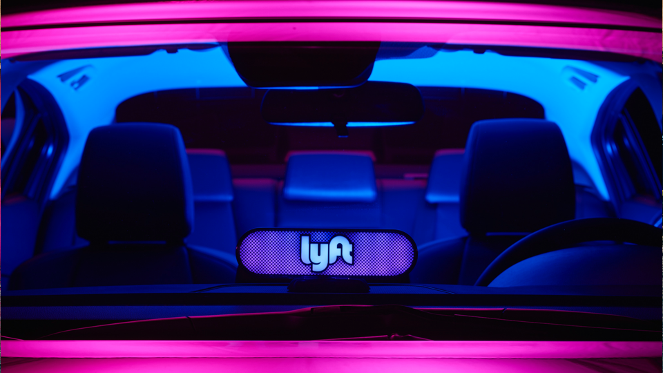

WATCH
AMPLIFY YOUR RIDE
Lyft’s new emblem, Amp, is the secret to smooth pickups. Lighting up dashboards nationwide, the device makes it easy for passengers and drivers to find each other.


WATCH
JUNE
In an animated short film by Academy Award-winner John Kahrs, a lonely widow in historic South Chicago is empowered to start sharing the ride — and sharing her life, too.